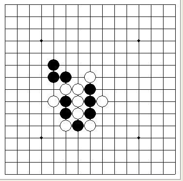

黑先如何必胜
首页
习题专区
#1 黑先如何必胜 作者：苯酚 发表时间：2011-7-29 13:59:31
 ［ 失落刀 于 2011-7-29 14:01:06 时花20金币送鲜花一朵］
［ 微微一笑 于 2011-7-29 14:11:45 时花20金币送鲜花一朵］
#2 Re:黑先如何必胜 作者：微微一笑 发表时间：2011-7-29 14:12:15
不会，等有人答出来我再送花。
#3 Re:黑先如何必胜 作者：屏蔽 发表时间：2011-7-29 14:27:33
你干嘛不直接在那个帖子里讨论……感觉没啥希望，棋形死板，第一手还得防。
#4 Re:Re:黑先如何必胜 作者：逆刃 发表时间：2011-7-29 14:44:43
 谱.rar
谱.rar［ 快乐天羽 于 2011-7-29 14:53:54 时奖励此帖[金币加 100 威望加1］
［ 微微一笑 于 2011-7-29 14:54:56 时花20金币送鲜花一朵］
［ ^版徒 于 2011-7-29 15:02:50 时花20金币送鲜花一朵］
［ 白河愁 于 2011-7-29 19:33:50 时花20金币送鲜花一朵］
#5 Re:黑先如何必胜 作者：游戏人间 发表时间：2011-7-29 15:01:33
11.rar
好像不难做了个地毯
［ 微微一笑 于 2011-7-29 15:02:24 时花20金币送鲜花一朵］
［ ^版徒 于 2011-7-29 15:02:59 时花20金币送鲜花一朵］
［ 快乐天羽 于 2011-7-29 15:09:50 时花20金币送鲜花一朵］
［ 白河愁 于 2011-7-29 19:33:57 时花20金币送鲜花一朵］
#6 Re:黑先如何必胜 作者：游戏人间 发表时间：2011-7-29 15:04:06
哦发晚了。。
#7 Re:黑先如何必胜 作者：快乐天羽 发表时间：2011-7-29 15:10:23
不晚，哥给你鲜花，绝对新鲜的。
#8 Re:黑先如何必胜 作者：微微一笑 发表时间：2011-7-29 15:17:03
我的比你的还新鲜点，带雨珠的。
#9 Re:黑先如何必胜 作者：岑小鱼 发表时间：2011-7-29 18:52:52
看地毯之前我先猜测一下黑这手是虚盖免三?
#10 Re:黑先如何必胜 作者：白河愁 发表时间：2011-7-29 19:35:19
十分感谢
如果18下挡的话该如何下？这个似乎也很难……